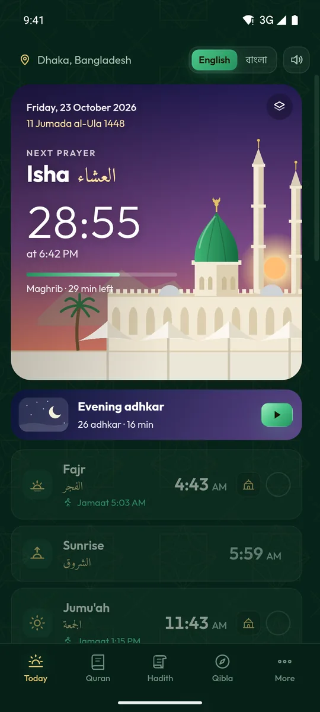
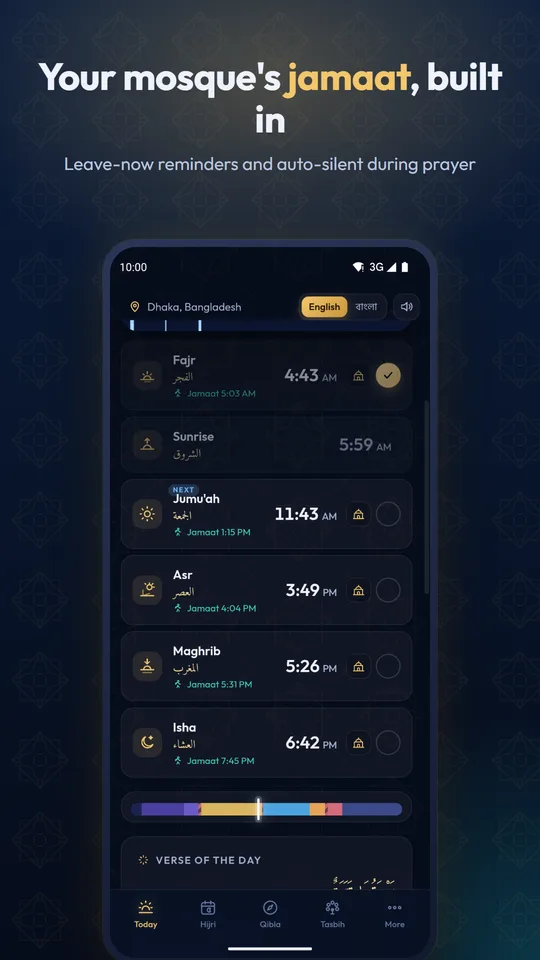
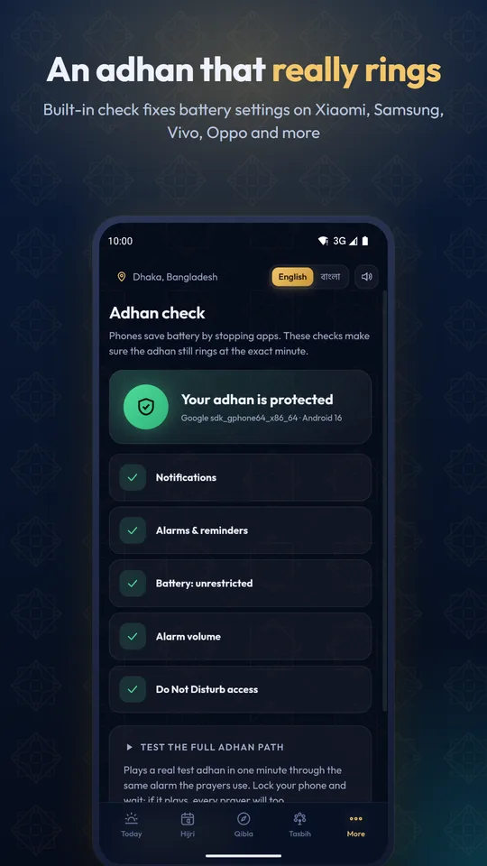
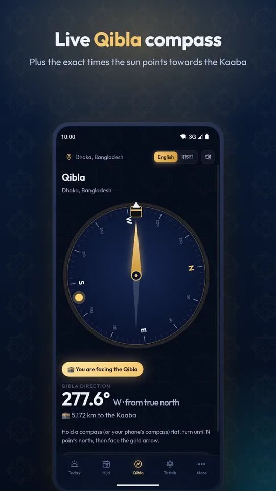
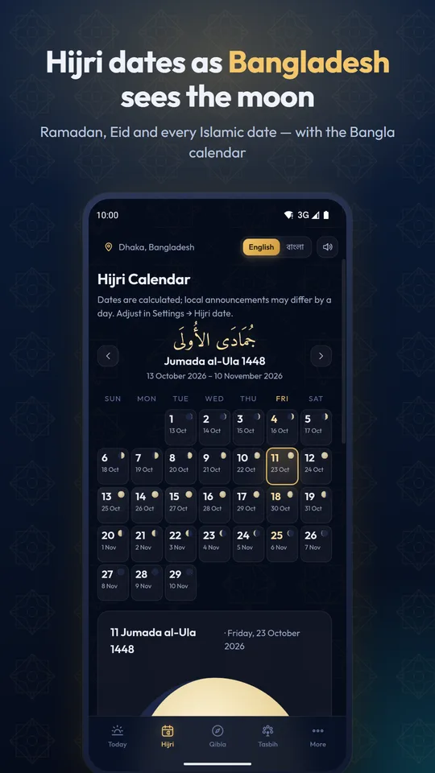
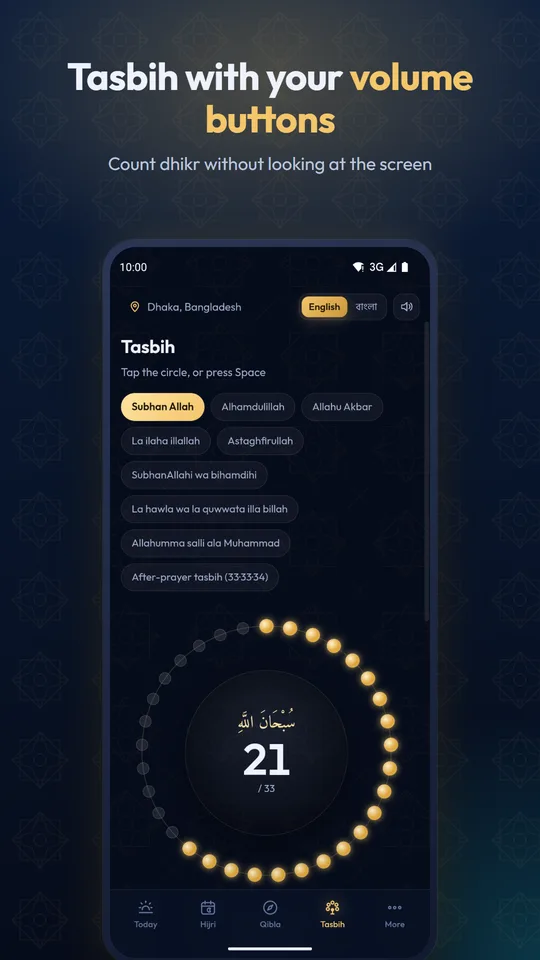

Prayer times with an azan that really rings on time
Waqt gives you accurate namaz times for your city, a beautiful azan five times a day, a live Qibla compass and the Hijri calendar as Bangladesh sees the moon. No ads. No tracking. Works offline.

Everything for your five daily prayers
Built for Bangladesh and made for Muslims everywhere, with the details other prayer apps miss.
Azan that never misses
Exact alarms, a built-in Adhan check for Xiaomi, Samsung, Vivo, Oppo, Realme and Tecno battery killers, and a real test azan.
Your mosque's jamaat
Add your mosque's jamaat times to get a "leave now" reminder and switch your phone to vibrate during prayer automatically.
Bangladesh Hijri dates
Islamic dates follow Bangladesh's moon sighting committee, not Saudi Arabia, plus the Bangla calendar date.
Live Qibla compass
The compass turns with your phone, and Waqt tells you the exact times the sun points to the Kaaba.
Ramadan sehri & iftar
Sehri alarm, iftar time and a full Ramadan timetable for your city, with the iftar dua.
Travel mode (Qasr)
Waqt notices when you are far enough from home to shorten Dhuhr, Asr and Isha, and offers local prayer times.
Fajr wake-up alarm
The Fajr azan keeps ringing until you get up and finish a short tasbih.
Tasbih with volume keys
Count dhikr with your phone's volume buttons, with the after-prayer 33·33·34 tasbih.
Prayer tracker
Mark every prayer, keep a streak, count jamaat prayers and plan your qada.
Screenshots





Frequently asked questions
Why doesn't the azan ring on my Xiaomi, Vivo, Oppo or Samsung phone?
Many phones stop apps in the background to save battery, which silences prayer alarms. Waqt's Adhan check finds every setting that can block the azan and opens the exact screen to fix it. Then play a real test azan with the phone locked.
Which calculation method does Waqt use in Bangladesh?
University of Islamic Sciences, Karachi (Fajr and Isha at 18°) with Hanafi Asr. Fifteen methods are available worldwide, and you can adjust each prayer by minutes to match your mosque.
Why is the Hijri date different from Saudi Arabia?
Bangladesh starts each Islamic month by local moon sighting, often a day after Saudi Arabia. Eid al-Fitr 2026 was on 21 March in Bangladesh and 20 March in Saudi Arabia. Waqt follows Bangladesh's announcements.
Does Waqt need the internet or collect my data?
No account and no ads. Prayer times, Qibla and the Hijri calendar are calculated on your phone and work offline. See the privacy policy.